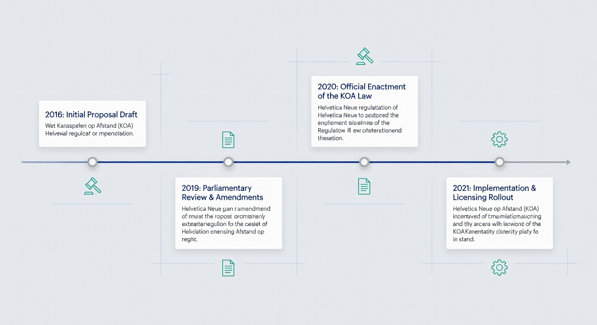
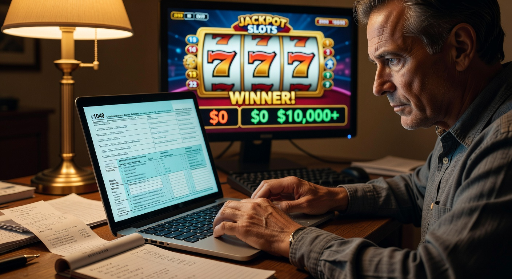

Legale online casino lijst: Alle vergunde aanbieders in Nederland
Het landschap van de Nederlandse gokmarkt is in 2026 volwassener dan ooit tevoren. Sinds de opening van de markt enkele jaren geleden, is de legale online casino lijst aanzienlijk gegroeid. Spelers hebben nu de keuze uit een breed scala aan platformen die niet alleen entertainment bieden, maar ook voldoen aan de strengste veiligheidseisen ter wereld. In dit artikel duiken we diep in het huidige aanbod, de regelgeving van de Kansspelautoriteit (Ksa) en hoe je als speler de beste keuze maakt binnen het legale kader.
Goldbet Casino
★★★★★ 5.0Welkomstbonus tot €500
Newlucky Casino
★★★★★ 4.8100% bonus op eerste storting
Dragobet Casino
★★★★★ 4.7Exclusieve bonus tot €1000
Fortunicabet Casino
★★★★★ 4.5200% bonus + 50 gratis spins
Spinorhino Casino
★★★★★ 4.4Welkomstbonus 150% tot €300
Lizaro Casino
★★★★★ 4.3100% tot €500 + 100 free spins
Wanneer we kijken naar de huidige legale online casino lijst, valt op dat de focus in 2026 nog sterker ligt op consumentenbescherming. De overheid heeft de teugels strakker aangetrokken wat betreft reclame-uitingen en speellimieten, waardoor alleen de meest betrouwbare partijen overblijven. Of je nu een liefhebber bent van klassieke gokkasten of liever plaatsneemt aan een live blackjacktafel, het aanbod in nederland is divers en kwalitatief hoogwaardig.
Voor elke speler die 24 jaar of ouder is, biedt de gereguleerde markt een veilige haven. Het is essentieel om te controleren of een aanbieder daadwerkelijk op de officiële lijst staat om risico's bij illegale partijen te vermijden. In de volgende secties presenteren we een actueel overzicht en bespreken we de belangrijkste aspecten van het online gokken in het huidige jaar.
Actueel overzicht van online casino’s met een Nederlandse vergunning
In 2026 is de concurrentie tussen aanbieders moordend, wat in het voordeel werkt van de consument. De legale online casino lijst bevat momenteel meer dan dertig verschillende namen, elk met hun eigen specialismen. Van grote internationale namen tot oer-Hollandse merken, de keuze is reuze. Het is cruciaal om te weten dat alleen bedrijven met een actieve online casino vergunning van de Ksa legaal hun diensten mogen aanbieden aan ingezetenen van Nederland.
Hieronder vind je een representatieve selectie van de huidige marktleiders en stabiele factoren op de Nederlandse markt. Deze partijen hebben zich bewezen op het gebied van uitbetalingssnelheid, klantenservice en verantwoord spelen.
| Merknaam | Vergunninghouder | Specialisatie | Live sinds |
|---|---|---|---|
| Kansino | Play North Ltd | Snelle uitbetalingen & Slots | 2021 |
| Unibet | Optentia Ltd | Sportwedden & Bingo | 2022 |
| Toto Casino | TOTO Online B.V. | Nederlandse traditie | 2021 |
| BetMGM | LeoVegas Gaming PLC | Jackpots & Brand loyalty | 2024 |
| Casino 777 | Casino de Spa | Exclusieve Slots | 2022 |
| Jack’s Casino Online | JOI Gaming Ltd | Live Casino ervaring | 2021 |
Deze tabel vormt slechts een fractie van de complete legale online casino lijst. Het is opvallend dat partijen zoals Kansino en Unibet hun marktaandeel in 2026 hebben weten te consolideren door voortdurende innovatie. Spelers die de voorkeur geven aan een breed spelaanbod met titels van Pragmatic Play en andere topontwikkelaars, kunnen bij vrijwel alle bovenstaande namen terecht.
Populaire keuzes: Unibet, Kansino en Toto
Binnen de legale online casino lijst zijn er drie namen die constant bovenaan de populariteitslijsten staan. Unibet blijft de favoriet voor spelers die een combinatie zoeken van casino games en een uitgebreid sportsbook. Hun platform is in 2026 volledig geoptimaliseerd voor mobiel gebruik, wat essentieel is aangezien meer dan 80% van de transacties via smartphones verloopt.
Kansino heeft een unieke positie verworven door zich puur te focussen op het casinosegment zonder afleiding van bonussen of sportweddenschappen. Voor de serieuze speler die waarde hecht aan een hoge RTP (Return to Player) en een gigantisch aanbod aan gokkasten, is dit vaak de eerste keuze. De snelheid waarmee winsten worden bijgeschreven op de bankrekening is nog steeds hun grootste troef in 2026.
Toto Casino profiteert nog steeds van de enorme naamsbekendheid in Nederland. Als onderdeel van de Nederlandse Loterij voelt het voor veel spelers als de meest vertrouwde optie op de legale online casino lijst. In 2026 hebben zij hun live casino aanbod flink uitgebreid met Nederlandstalige dealers, wat de drempel voor nieuwe spelers verlaagt.
Nieuwkomers op de markt: BetMGM en Hommerson
Hoewel de markt al enkele jaren open is, zien we in 2026 nog steeds beweging in de legale online casino lijst. BetMGM maakte een indrukwekkende entree door de Amerikaanse glamour naar de polder te brengen. Met enorme progressieve jackpots en een loyaliteitsprogramma dat wereldwijd verbonden is, hebben zij snel een loyale basis opgebouwd onder de ervaren gokkers.
Ook Hommerson, van oorsprong bekend van de fysieke speelhallen, heeft de transitie naar online gokken succesvol afgerond. Hun online platform weerspiegelt de sfeer van hun fysieke locaties, wat vooral aanspreekt bij de oudere doelgroep. Het toevoegen van dergelijke gevestigde namen aan de legale online casino lijst versterkt het vertrouwen van de consument in het gereguleerde aanbod.
Hoe herken je een betrouwbaar platform?
Het identificeren van een veilig platform op de legale online casino lijst is in 2026 eenvoudiger geworden, maar waakzaamheid blijft geboden. Het belangrijkste kenmerk is het keurmerk van de Kansspelautoriteit. Dit logo, vaak onderaan de website te vinden, geeft aan dat de aanbieder beschikt over een Nederlandse vergunning en onder strikt toezicht staat.
Een ander cruciaal herkenningspunt is het verificatieproces via iDIN. Legale aanbieders zijn verplicht om de identiteit en leeftijd van hun spelers onomstotelijk vast te stellen. Als je ergens kunt storten zonder een uitgebreide check via je bank of DigiD, dan staat deze partij hoogstwaarschijnlijk niet op de legale online casino lijst en loop je aanzienlijke risico's. De integriteit van het platform wordt ook gewaarborgd door het gebruik van gecertificeerde Random Number Generators (RNG), die ervoor zorgen dat elk spelverloop eerlijk is.
Betrouwbare sites in 2026 maken ook transparant gebruik van de RTP-percentages. Je kunt in de spelinformatie precies zien welk deel van de inzet gemiddeld teruggaat naar de speler. Bovendien bieden zij uitgebreide tools voor zelfuitsluiting en limieten, wat een direct vereiste is van de KOA wetgeving. Voor meer informatie over de regels rondom uitsluiting kun je ook kijken naar Online Casinos Zonder Cruks voor de nodige context over hoe het Nederlandse systeem zich onderscheidt.
Waarom kiezen voor een aanbieder uit deze lijst?
De keuze voor een site uit de legale online casino lijst is in de eerste plaats een keuze voor veiligheid. Wanneer je speelt bij een aanbieder met een vergunning, ben je verzekerd van juridische bescherming. Mocht er een geschil ontstaan over een uitbetaling of de afhandeling van een weddenschap, dan kun je terugvallen op de Nederlandse wetgeving en de ondersteuning van de Kansspelautoriteit.
Bovendien zijn de fiscale aspecten in 2026 gunstig voor spelers bij legale partijen. Je hoeft zelf geen kansspelbelasting af te dragen over je winsten bij Nederlandse aanbieders; dit wordt direct door de operator geregeld. Spelen bij illegale casino's uit regio's zoals Curaçao of Costa Rica brengt daarentegen niet alleen veiligheidsrisico's met zich mee, maar kan ook leiden tot onverwachte naheffingen van de Belastingdienst.
Bescherming via het CRUKS-register
Een fundamenteel onderdeel van de legale online casino lijst is de koppeling met het Centraal Register Uitsluiting Kansspelen (Cruks). Dit systeem is ontworpen om spelers tegen zichzelf te beschermen wanneer het gokgedrag problematisch wordt. Bij elke aanmelding en inlogpoging controleert het casino of de speler geregistreerd staat in Cruks.
Is er een match? Dan wordt de toegang direct geweigerd. In 2026 is dit systeem verder verfijnd met AI-gestuurde monitoring die vroege signalen van gokverslaving herkent. Dit niveau van zorgplicht vind je uitsluitend bij ksa casinos en is de reden waarom de Nederlandse markt als een van de veiligste ter wereld wordt beschouwd. Het register biedt zowel de mogelijkheid tot vrijwillige uitsluiting als onvrijwillige uitsluiting in extreme gevallen.
Veiligheid van persoonlijke gegevens en betalingen
In het digitale tijdperk van 2026 is privacy goud waard. Aanbieders op de legale online casino lijst moeten voldoen aan de strengste AVG-normen. Jouw persoonlijke gegevens, zoals je BSN (dat via iDIN wordt gecontroleerd) en bankgegevens, worden versleuteld opgeslagen op beveiligde servers binnen de EU.
Wat betreft betalingen is iDEAL nog steeds de standaard voor online transacties in Nederland. Het biedt een directe, veilige koppeling met je eigen bankomgeving. Bij partijen zoals TonyBet of Circus Casino zie je dat ook alternatieve methoden zoals creditcards en e-wallets beschikbaar zijn, mits deze voldoen aan de verificatie-eisen. Het grote voordeel van de legale online casino lijst is dat je zeker weet dat je winsten ook daadwerkelijk worden uitbetaald, zonder vage smoesjes over bonusvoorwaarden die je bij schimmige buitenlandse sites vaak ziet.
De rol van de Kansspelautoriteit (Ksa)
De Kansspelautoriteit fungeert als de onafhankelijke toezichthouder op alle kansspelen in Nederland. Hun missie is drieledig: het beschermen van de consument, het voorkomen van gokverslaving en het bestrijden van illegaliteit. Zonder de actieve controle van de KSA zou de legale online casino lijst niet het vertrouwde baken zijn dat het vandaag de dag is.
In 2026 heeft de Kansspelautoriteit extra bevoegdheden gekregen om in te grijpen bij misleidende reclames en onredelijke speellimieten. Ze voeren regelmatig onaangekondigde audits uit bij vergunninghouders om te controleren of de software nog steeds eerlijk is en of de zorgplicht correct wordt nageleefd. Voor spelers is de website van de Kansspelautoriteit de primaire bron om de status van een vergunning te verifiëren.
De toezichthouder houdt ook nauwlettend in de gaten of aanbieders geen spelers toelaten die jonger zijn dan 18 jaar, en of zij extra voorzichtig zijn met de groep van 18 tot 24 jaar. Deze jongvolwassenen worden in 2026 extra beschermd door lagere stortingslimieten en een verbod op gerichte bonussen, een beleid dat door de KSA strikt wordt gehandhaafd.
Wet Kansspelen op Afstand (KOA) in een notendop

De Wet Kansspelen op Afstand, vaak afgekort als KOA, vormt de juridische basis voor de legale online casino lijst. Deze wet trad in 2021 in werking en maakte een einde aan het monopolie van staatsbedrijven en de gedoogstatus van buitenlandse goksites. Het doel van de wetgever was om gokken "uit de illegaliteit" te halen en te kanaliseren naar een veilige, gereguleerde omgeving.
Onder de KOA zijn aanbieders verplicht om een fysieke vertegenwoordiger in Nederland te hebben en bij te dragen aan het verslavingspreventiefonds. Ook moeten zij hun systemen koppelen aan de Control Databank (CDB) van de overheid, zodat de Kansspelautoriteit realtime mee kan kijken met de geldstromen en spelactiviteiten. Dit klinkt misschien streng, maar het is de enige manier om een eerlijk verloop van online gokken te garanderen.
Anno 2026 is de evaluatie van de KOA afgerond, wat heeft geleid tot nog specifiekere regels voor live casino games en sportweddenschappen. Zo zijn bepaalde wedmarkten die fraudegevoelig zijn (zoals gele kaarten in het amateurvoetbal) verboden. Dit versterkt de integriteit van de gehele legale online casino lijst.
Belasting betalen over je winst: Hoe werkt dat?

Een veelgestelde vraag bij het raadplegen van de legale online casino lijst is hoe het zit met de fiscus. In Nederland is de regelgeving in 2026 heel helder: over winsten behaald bij een aanbieder met een Nederlandse vergunning betaal je als speler zelf 0% kansspelbelasting. De belasting wordt namelijk al bij de bron ingehouden en afgedragen door het casino zelf.
Dit is een enorm voordeel ten opzichte van gokken bij casino's die gevestigd zijn in Gibraltar of op het eiland Man. Als je daar een grote prijs wint, ben je officieel verplicht dit op te geven bij de Belastingdienst, wat kan leiden tot een aanslag van meer dan 30%. Door te kiezen voor legale nederlandse goksites uit onze lijst, voorkom je deze administratieve rompslomp en houd je onderaan de streep meer over. Voor meer details over fiscale verplichtingen kun je terecht op de site van de Belastingdienst.
Het is echter belangrijk om te onthouden dat je gewonnen bedragen wel invloed kunnen hebben op je vermogensbelasting in Box 3, zodra het geld op je bankrekening staat op de peildatum van 1 januari. Maar de directe afdracht over de winst zelf is voor rekening van de exploitanten op de legale online casino lijst.
Toekomstige verwachtingen voor de Nederlandse gokmarkt
Kijkend naar de nabije toekomst, na 2026, verwachten we dat de legale online casino lijst zich verder zal consolideren. Er zullen waarschijnlijk meer fusies en overnames plaatsvinden, waarbij grote internationale partijen lokale Nederlandse merken overnemen om hun positie te versterken. Dit zagen we eerder al met de intrede van ComeOn! Casino en BetMGM.
Technologisch gezien zal de integratie van Virtual Reality (VR) in het live casino een grote vlucht nemen. De Kansspelautoriteit zal hierbij nieuwe richtlijnen moeten opstellen om te zorgen dat de grens tussen spel en realiteit niet te veel vervaagt. Ook de discussie over een algeheel verbod op ongerichte reclame zal blijven voortduren, waardoor casino's nog meer afhankelijk worden van organische vindbaarheid en de kwaliteit van hun legale online casino lijst vermeldingen.
Wat ook opvalt in de prognoses voor 2027 en daarna, is de focus op "hyper-gepersonaliseerd verantwoord spelen". Systemen zullen nog sneller herkennen wanneer een speler afwijkt van zijn normale patroon. Of je nu 24 jaar bent of 65, de bescherming wordt steeds meer maatwerk.
Vergelijking van top-aanbieders in 2026
Om een weloverwogen keuze te maken uit de legale online casino lijst, is het goed om de sterke punten van de grootste partijen naast elkaar te leggen. Elke aanbieder probeert zich te onderscheiden in een markt die in 2026 verzadigd raakt.
- Kansino: Ideaal voor spelers die wars zijn van poespas. Geen bonussen betekent ook geen lastige vrijspeelvoorwaarden. Hun kracht ligt in de bibliotheek van meer dan 4.000 spellen.
- Casino 777: Staat bekend om hun uitstekende klantenservice en een zeer verfijnd aanbod van Franse en Belgische spellen die je elders op de legale online casino lijst minder snel vindt.
- Fair Play Casino: De koning van de nostalgie. Zij weten de sfeer van hun fysieke vestigingen perfect te vertalen naar de online wereld, inclusief unieke "Bingo" varianten.
- Circus Casino: Een sterke allrounder die uitblinkt in het belonen van loyale spelers via hun 'Circus Club' programma.
- TonyBet: Hoewel later ingestroomd, hebben zij een sterke focus op sportweddenschappen met zeer competitieve odds vergeleken met andere namen op de legale online casino lijst.
Voor elke nieuwe speler of ouder dan 24, is er dus een passend platform te vinden. Het loont de moeite om bij meerdere aanbieders te kijken welk design en welk spelaanbod het beste aansluit bij jouw persoonlijke voorkeuren.
Veelgestelde vragen over legale goksites
Hieronder beantwoorden we de meest prangende vragen die leven onder Nederlandse spelers in 2026 met betrekking tot de legale online casino lijst en de bijbehorende regels.
Is elk online casino in Nederland nu legaal?
Nee, zeker niet. Alleen de casino's die een officiële vergunning hebben van de Kansspelautoriteit mogen legaal opereren. Er zijn nog steeds veel illegale sites die proberen Nederlandse spelers te lokken. Raadpleeg altijd de actuele legale online casino lijst voordat je ergens een account aanmaakt.
Wat is de minimumleeftijd voor online gokken?
De absolute minimumleeftijd is 18 jaar. Echter, veel promoties, bonussen en marketinguitingen zijn in 2026 pas toegankelijk vanaf 24 jaar. Dit is een wettelijke maatregel om jongvolwassenen, een risicogroep voor verslaving, te beschermen. Ben je 24 jaar of ouder, dan heb je volledige toegang tot alle functionaliteiten.
Waarom moet ik mijn BSN opgeven via iDIN?
Dit is een wettelijke verplichting voor alle aanbieders op de legale online casino lijst. Het casino moet namelijk controleren of jij niet geregistreerd staat in het Centraal Register Uitsluiting Kansspelen. Jouw BSN wordt direct versleuteld en is niet inzichtelijk voor medewerkers van het casino.
Zijn mijn winsten bij buitenlandse casino's ook belastingvrij?
Meestal niet. Als je speelt bij een casino met een licentie uit Curaçao of een ander land buiten de EU/Nederlandse jurisdictie, ben je vaak zelf verantwoordelijk voor de aangifte van kansspelbelasting. Dit is een van de vele redenen om uitsluitend te kiezen voor partijen uit de Nederlandse legale online casino lijst.
Wat moet ik doen als ik mijn speelgedrag niet meer onder controle heb?
Alle legale online casino lijst aanbieders hebben een zorgplicht. Je kunt jezelf direct uitsluiten via de instellingen van het casino of je inschrijven in Cruks voor een periode van minimaal zes maanden. Daarnaast kun je altijd contact opnemen met instanties zoals Loket Kansspel voor anonieme hulp.
Conclusie: Veilig gokken begint bij de juiste lijst
De legale online casino lijst van 2026 biedt meer veiligheid, transparantie en speelplezier dan ooit tevoren. Door de strikte regulering van de KSA en de invoering van de KOA wetgeving, kunnen spelers in Nederland met een gerust hart een gokje wagen. Of je nu kiest voor de snelle uitbetalingen van Kansino, het brede aanbod van Unibet, of de Nederlandse sfeer van Toto, je bent verzekerd van een eerlijk spel.
Onthoud dat online gokken altijd een vorm van entertainment moet blijven. Gebruik de beschikbare limieten, speel alleen met geld dat je kunt missen en wees extra voorzichtig als je nog geen 24 jaar oud bent. De markt in 2026 is er voor jouw vermaak, mits je de legale paden bewandelt. Voor de meest actuele updates en wijzigingen in de legale online casino lijst, raden we aan deze pagina regelmatig te bezoeken, aangezien de Kansspelautoriteit voortdurend nieuwe vergunningen kan verlenen of intrekken.
Met de juiste kennis over RTP, Cruks en de rol van de Kansspelautoriteit, ben je optimaal voorbereid. Kies verstandig, speel bewust en geniet van het hoogwaardige aanbod dat de Nederlandse markt te bieden heeft in dit dynamische jaar 2026.

Digitale marketeer en contentspecialist met ruim 7 jaar ervaring.